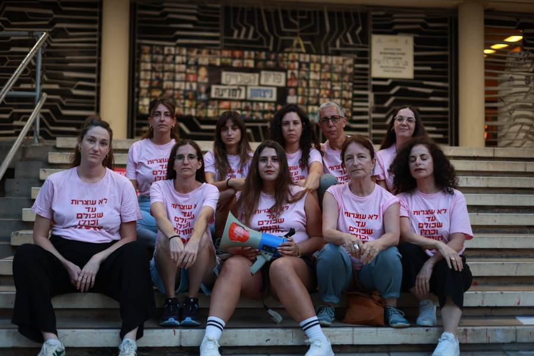
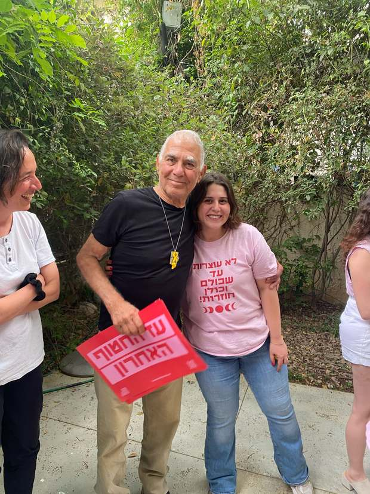
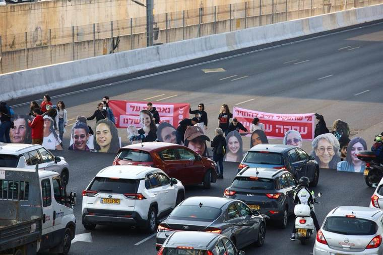
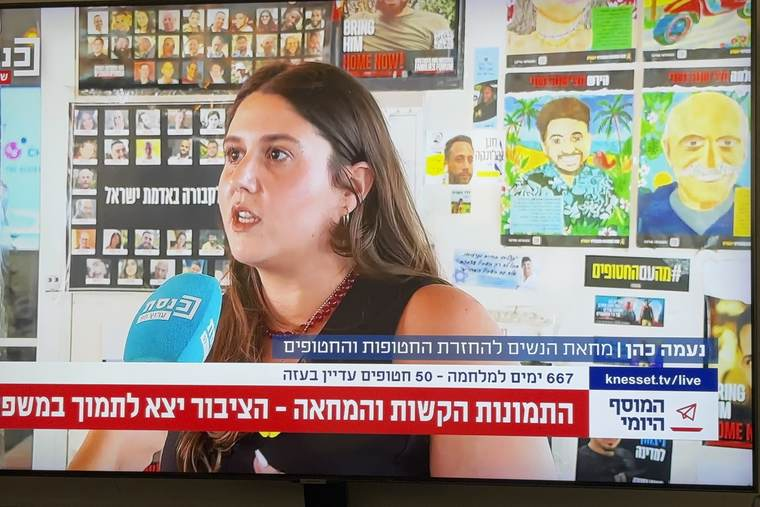

התיק
שבע־עשרה יוזמות, חוקים ורפורמות
קמפיינים ומאבקים שיזמתי, הובלתי או לקחתי בהם חלק. אפשר לסנן לפי תחום.
יוזמות דגל
לא צריכים לעבוד יותר מ־26 שעות ברצף.
מתוך הקמפיין לקיצור תורנויות המתמחים
בשטח
מחאת הנשים להחזרת החטופות והחטופים
ארגון, לוגיסטיקה ועמידה על הכביש — מהשבועות הראשונים ועד היום.




ניסיון
תפקידים
רקע
השכלה, כישורים והתנדבות
השכלה
- 2021–2022
- M.A. בהצטיינות — ממשל, מדיניות ציבורית ושיווק פוליטי, אוניברסיטת רייכמן
- 2016–2019
- B.A. — פוליטיקה וממשל ותקשורת, אוניברסיטת בן גוריון
- 2024
- תעודת דירקטורית — האוניברסיטה העברית
- 2012–2014
- שירות מלא, חיל האוויר
כישורים ושפות
- שפות
- עברית — שפת אם · אנגלית — גבוהה · ספרדית — גבוהה
התנדבות
- ״15 דקות״ לקידום התחבורה הציבורית
- חברת ועדת ביקורת — פיקוח על הדו״ח הכספי וייעוץ למנכ״לית
- ״מפגינות נוכחות״
- הדרכת מתנדבים בהשתתפות פעילה בכנסת